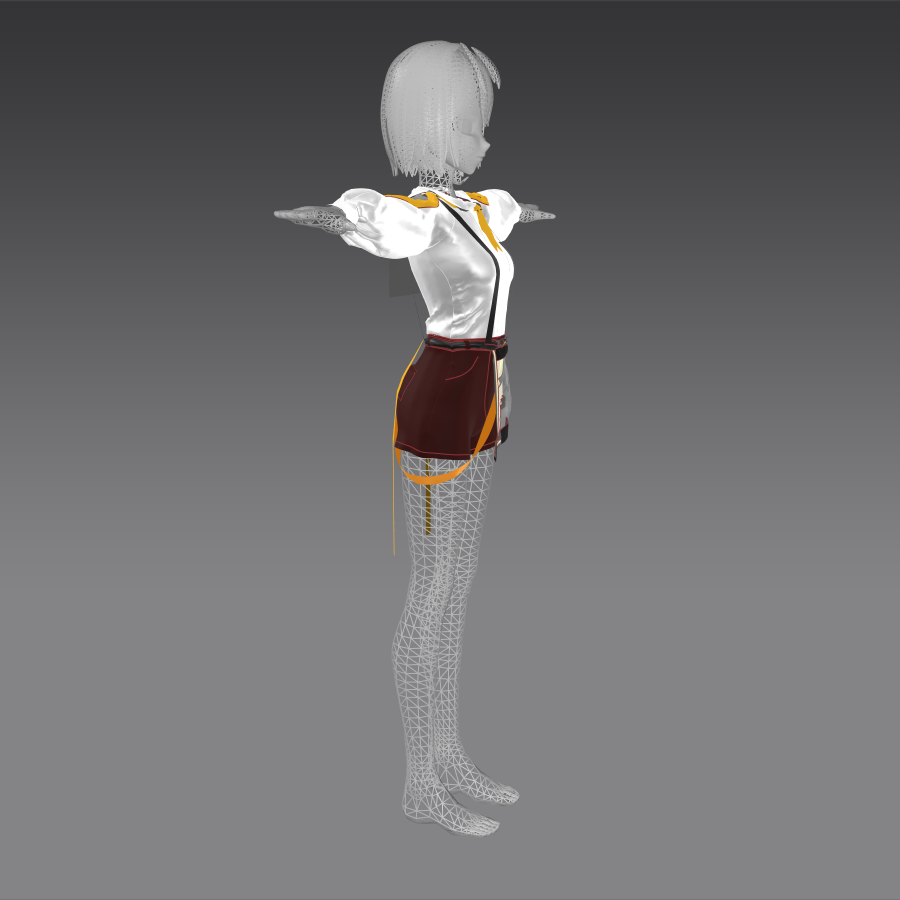
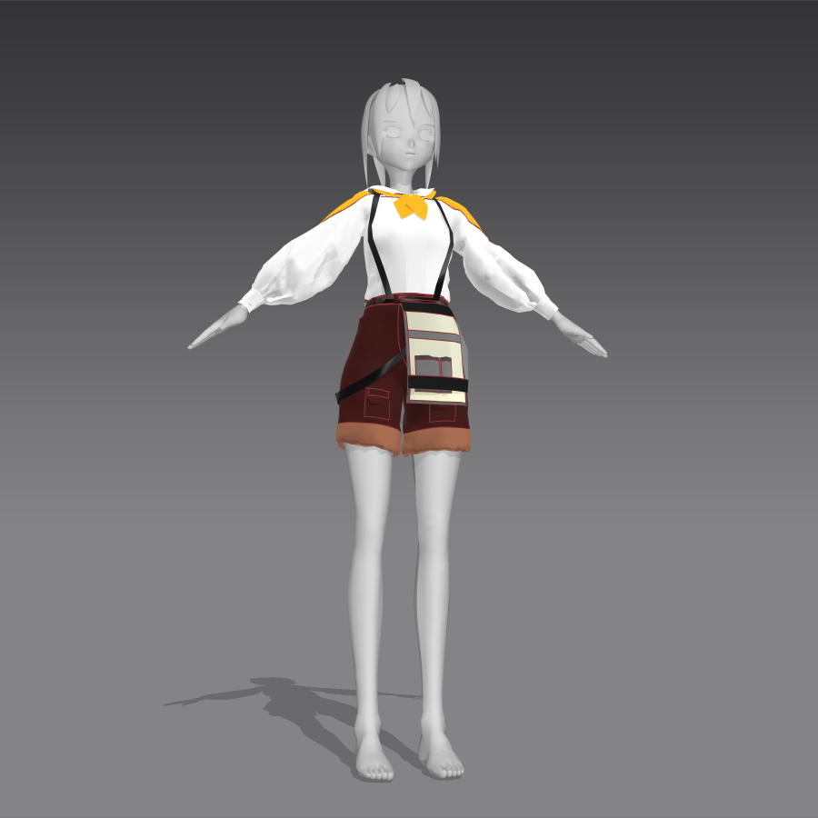

이 작업은 게임 화면에서 가장 먼저 보이는 정보 구조를 정리하는 것부터 시작했습니다.
아이콘, 버튼, 상태창을 한 번에 화려하게 넣기보다는 플레이 중 필요한 정보가 어디에 배치되어야 하는지 먼저 정리했습니다.

이 작업은 게임 화면에서 가장 먼저 보이는 정보 구조를 정리하는 것부터 시작했습니다.
아이콘, 버튼, 상태창을 한 번에 화려하게 넣기보다는 플레이 중 필요한 정보가 어디에 배치되어야 하는지 먼저 정리했습니다.

핵심 포인트
시선 흐름은 좌상단에서 우하단으로 자연스럽게 이어지도록 잡고, 주요 버튼은 캐릭터 실루엣을 가리지 않게 배치했습니다.
텍스트는 시안 단계부터 실제 게임처럼 길어질 수 있다고 가정하고 여백을 넉넉하게 두었습니다.

최종 단계에서는 컬러 대비와 버튼 크기를 다시 조정해 마우스 이동 동선을 줄였습니다.
이후 작업에서는 애니메이션과 인터랙션 상태까지 붙여 실제 사용감에 더 가깝게 다듬을 예정입니다.